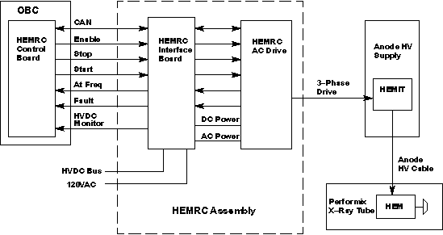
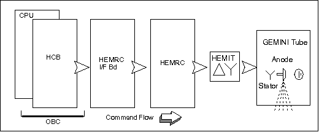
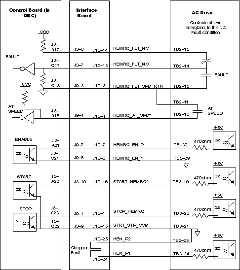
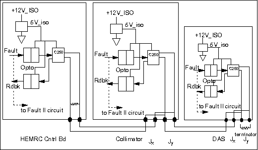
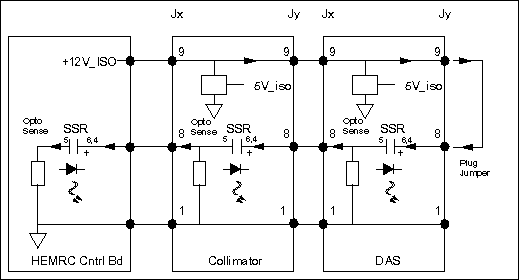
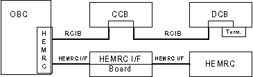
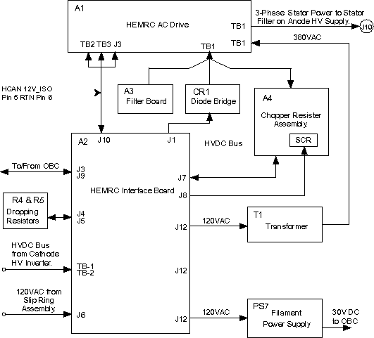
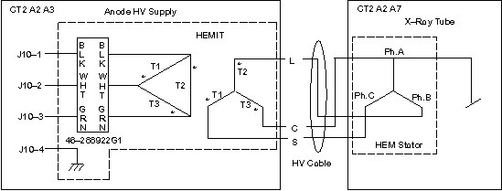

Proprietary to General Electric
Direction 5114045-800, Rev# 10
LightSpeed 4.X Service Information (Advanced)
Proprietary to General Electric |
The Performix Tube uses a three-phase stator, which requires a HEMRC (High Efficiency Motor Rotor Controller) assembly and HEMRC Control board instead of the CTVRC Control board and assembly.
The HEMRC Control board, (2179860) resides in slot A2 of the OBC. The HEMRC Control board performs three main functions. It provides:
The interface between the OBC and the HEMRC
Illustration 4, shows a Functional Interconnect for the hardwire control signals.
HVDC Bus voltage monitoring
A CAN (Controller Area Network) interface between the OBC and future subsystems
See Section 2, for HEMRC Control board Theory of Operation.
The HEMRC Assembly contains an Interface Board, AC Drive, Chopper Resistor Assembly, harness and assorted power supplies. The HEMRC Assembly also contains the Detector Heater, Collimator and Filament Power Supplies, which operate in the same manner as their HSA (CTVRC) counterparts.
The HEMRC Assembly replaces the CTVRC Assembly in systems that use the Performix tube.
Illustration 1 shows a block diagram of the HEMRC assembly.
Illustration 1: HEMRC Hardware Block Diagram

The HEMRC Rotor has nine phases of operation: three accel phases, two Run phases, three Brake phases, and idle. The three accel phases and the 1st run phase use HVDC; the rest use 120 VAC stepped up to 380VAC by T1. Illustration 2 provides a graphical interpretation of the nine phases. For more details, refer to Determining Rotor Operation State.
Illustration 2: Nine Phases of Rotor Operation

The Rotor Control function provides three phase power to the rotating anode of the Performix x-ray tube. In addition to the HEMRC Control board, the Performix tube requires a HEMRC AC Drive, HEMRC Interface board, HEMIT (High Efficiency Motor Isolation Transformer), and controlling firmware. The rotor control firmware controls the acceleration, run, and deceleration cycles of the rotating anode. The rotor control firmware resides on the OBC CPU board and communicates directly with the HEMRC Control board (HCB), in slot A2. The HEMRC Control board communicates with the HEMRC AC Drive through the HEMRC Interface board (HIF), located on the HEMRC assembly. The drive converts input power to three phase anode HEM (High Efficiency Motor Drive). This motor drive power passes through the HEMIT, located in the Anode High Voltage Transformer, before it reaches the HEM in the Performix Tube.
Refer to Illustration 3. Control signals travel from the HCB to the HEMRC through the gantry harness. The HEMRC Interface Board routes the signals to the HEMRC AC Drive. The HEMRC AC Drive sends Stator power through a low voltage, shielded stator cable to the HEMIT. The HEMIT provides 1:1 HV isolation and couples the stator power to the Performix tube through the Anode High Voltage cable.
Illustration 3: HEMRC Functional Command Flow Diagram

The HEMRC Control board (HCB), located in slot A2 of the OBC, uses the VME bus to communicate with the OBC CPU. The HCB uses a CAN (Controller Area Network) serial interface, called the HCAN (HEMRC CAN), and discrete signals to communicate with the HEMRC. Illustration 4 shows the discrete control signals. The CAN interface and discrete control signals enter the HIF (HEMRC Interface) for distribution to the HEMRC. The HIF also provides an analog feedback voltage to the HEMRC Control board in proportion to the voltage on the CT HVDC bus.
The HCB also contains a separate CAN serial interface, called the GCAN (Gantry CAN), and discrete control signals to communicate with other subsystems in the CT gantry subsystem. The HCB communicates with the HIF and gantry subsystems through shielded cables from the J3 connector of the HEMRC Control board.
Both the HEMRC CAN and the Gantry CAN originate in the HCB. The HCB supplies isolated 12V power (1.2A capability) and Fault circuitry to the GCAN, and accommodates up to six (6) CAN nodes (future) on the network.
Fault detectors and fault status feedback from the HEMRC and Gantry CAN based subsystems (if used) monitor hardware operation. The HCB notifies the CPU when it detects a fault, or a monitored value falls out of tolerance.
The VME interface contains the logic to perform address and data latching, address decoding, and VME handshaking, according to timing specified in PAL documentation, 2147462PDL. All signals pass through the standard VME connector, J1.
Of the seven interrupts defined for the VME bus, the HCB uses level 1, level 2, and level 4 interrupts. Other boards on the OBC also use the level 1 interrupt, which is wire OR-ed on the backplane.
IRQ1: Interrupt level 1 indicates the presence of a hard failure. A fault signal from the HEMRC or the HIV (High Voltage DC Bus Over voltage signal) generates a level 1 interrupt. Firmware can mask a HEMRC fault with the HEMRC_FLT_EN signal, to prevent HCB tie ups.
IRQ2: The HCB uses Interrupt level 2 during HCAN and GCAN communications.
IRQ4: Interrupt level 4 indicates the occurrence of a transition a state change or the presence of a Gantry CAN fault. Firmware can mask the GCAN fault.
In normal operation, the OBC CPU sends state commands through the command registers located at address FFB821H and FFB823H. The OBC CPU also uses the command register located at FFB823H to provide Board Level Diagnostic (BLD) features.
The registers located at FFB829H, FFB82BH, and FFB82DH report Status.
Section 2.16 contains the Command Register assignments.
The HCB contains a manual board reset pushbutton. Pushing the on-board reset does not have the same effect as receiving a RACKRST or SYSRST from the VME. The RACKRST and SYSRST also reset the GCAN.
U2, U3, and U4 on the HCB generate 244Hz and 15.26Hz clocks from the 16MHz clock. The HVDC Bus monitoring circuit uses the 244Hz clock and the HEMRC CAN Interface circuit uses the 15.26 Hz clock.
The Voltage Reference circuitry produces a test reference voltage used to test the HVDC Bus monitoring circuit during board level diagnostic (BLD) tests.
The HCB uses the 82527 CAN protocol controller (U54) and CAN bus interface circuitry to communicate with the HEMRC Assembly. The HCB communicates with the OBC CPU through the address and data bus, R_W*, and HEMRC_CAN_CS* signals. The 82527 communicates with the HEMRC through the HCAN bus interface, connected to the TX0 and RX0 pins. The 82527 interrupts the OBC CPU with the HEMRC_CAN_IRQ* signal to indicate a status change of the 82527. The HEMRC_CAN_IRQ* generates a level 2 interrupt to the OBC CPU through the status register located at FFB82DH, bit 0.
The 82527 uses the 16MHz clock for timing. The board RESET* signal resets the 82527.
U66 and U67 optically isolate the HEMRC CAN bus from the HEMRC Control board circuitry. U77, the CAN transceiver chip, resides on the isolated side of the CAN interface. The optically isolated side of the HEMRC CAN receives power from an isolated 12 volt, 125 mA supply located on the HEMRC. VR3 regulates this 12 volt supply down to 5 volts. This isolated 5 volt supply provides power to the isolated side of the HEMRC CAN interface. The HEMRC CAN output signals are HCH and HCL. R94 provides the required CAN bus termination for the HEMRC Control board end of the HEMRC CAN bus.
DS8 illuminates whenever the 82C250 receives data over the HEMRC CAN bus.
The communications between the OBC and HEMRC consist of:
Bi-directional CAN serial communications bus: a 125 Kbaud bidirectional serial link, used to convey commands and status information between the HEMRC and OBC
Fault signal from the HEMRC to OBC
At-speed signal from the HEMRC to the OBC
Enable signal from the OBC to the HEMRC
Three-wire start-stop signal
The opto-isolated Enable, Start, and Stop signals from the OBC to the HEMRC provide a contact closure as an input to the HEMRC ( Illustration 4). The Enable contacts close electrically to enable the HEMRC, the Start contacts close electrically to start the HEMRC, and the Stop contacts close electrically to enable the HEMRC to run and open electrically to stop the HEMRC. The Enable, Start, and Stop opto-isolators carry 10mA with less than a 3V drop when closed, and withstand 5V when the contacts open.
Illustration 4: Hardwire Control Signals, Functional Interconnect

The fault signal from the HEMRC to the OBC consists of the HEMRC_FLT_NC, HEMRC_FLT_NO, and HEMRC_FLT_SPD_RTN signal wires. Illustration 4 contains a block diagram of the connections between the HCB and HEMRC. Refer to the schematics for actual component values. Use the components in Illustration 4 for functional reference only. The circuit uses drives with a normally-open fault contact. If either the HEMRC_FLT_NC signal wires or HEMRC_FLT_NO signal wires open electrically, the HCB generates a fault condition. If the HEMRC_FLT_SPD_RTN signal wires open while the HEMRC_FLT_NC and HEMRC_FLT_NO signal wires are connected, the HCB does NOT sense a HEMRC fault condition. The HEMRC_FLT_SPD_RTN connects to chassis ground to provide a redundant signal return path for the fault signal. In addition, if the HEMRC_FLT_SPD_RTN wire opens, the HCB will not sense an at-speed condition, which indicates the x-ray tube anode failed to reach a safe speed to allow x-ray exposure.
The HEMRC fault feedback circuit uses three signals from the HEMRC (fed back through the HEMRC Interface board), HEMRC_FLT_NC, HEMRC_FLT_NO, and HEMRC_FLT_SPD_RTN. Under a no-fault operating condition, the HEMRC_FLT_NC and HEMRC_FLT_NO signals connect electrically, and the HEMRC_FLT_NO and HEMRC_FLT_SPD_RTN signals do not connect electrically, which creates a logic high signal to the input of U17 pin 1, that indicates a no-fault condition. During a fault condition, no electrical connection exists between the HEMRC_FLT_NC and HEMRC_FLT_NO signals, and the HEMRC_FLT_NO and HEMRC_FLT_SPD_RTN signals connect electrically to create a logic low to the input of U15 pin 1, which indicates a fault condition.
If the rotor is at or above Frequency for the phase it is currently in, then AT SPEED will be satisfied and closes. AT SPEED then opens when the Phase changes transition, and waits for the rotor to be at or above Frequency again for this next phase, then will close if the rotor reaches Frequency. This will continue throughout the entire rotor cycle, Accel, Run, and Brake. It is key to know that the A/B drive will try to drive the rotor to the correct speed, and if it can not attain the speed requested, the current will max out at a specific level and not drive any higher, the result will be that the rotor could not make it to the correct frequency in the allotted time for that phase, and the AT SPEED fault will be seen.
This feedback uses three signals to allow a broken wire to be detected as a fault condition. If the HEMRC_FLT_NC wire breaks, the input to U15 pin 1 goes low to indicate a fault condition (regardless of the integrity of the two remaining signals). If the HEMRC_FLT_NO wire breaks, the input to U15 pin 1 goes low to indicate a fault condition (regardless of the integrity of the two remaining signals). If the HEMRC_FLT_SPD_RTN signal wire breaks, the drive uses the remaining HEMRC_FLT_NC and HEMRC_FLT_NO signals to indicate a fault condition. With the three signal design, no possible combination of broken wires could prevent the detection of a HEMRC fault condition.
In a fault condition, U17 pin 2 goes to a logic high, which clears the D flip-flop U20 and causes U20 pin 12 to go high and indicate a fault with the signal HEMRC_FLT. During a fault condition, U41 pin 10 goes to a logic low, which combines with the ROT_EN signal to disable the HEMRC.
When the fault clears, the FLTRST signal resets the HEMRC_FLT.
Under a no-fault condition, the HEMRC enables when the ROT_EN signal and the output U41 pin 10 (no fault) go to a logic high, creating a low impedance between the HEMRC_EN_P and HEMRC_EN_N output signals, which turns the opto-isolator U73 “ON”.
The HEMRC_EN_P and HEMRC_EN_N output signals pass through the HEMRC Interface board on route to the HEMRC. The center of schematic sheet eight contains the HEMRC at-speed indication circuit. When the HEMRC reaches its programmed speed, it closes a contact between the HEMRC_AT _SPD* and HEMRC_FLT_SPD_RTN signals, to create a logic high to U17 pin 4. The next clock pulse clocks this signal into D flip-flop U6, which sends the AT_SPEED signal to a logic high to generate a momentary pulse on the STAT_CHG signal, which in turn sends a level 4 interrupt to the OBC CPU.
Because D flip-flop U6 receives a 15.26Hz clock pulse, the OBC CPU has enough time to respond to the level 4 interrupt and read the status of the HEMRC Control board before the status changes again. This clocking scheme also prevents the generation of simultaneous interrupts. The HEMRC_AT_SPD* signal combines with the INTLK* signal to prevent x-ray exposure from occurring before the HEMRC reaches its pre-programmed speed. The EXPEN signal must equal a logic high before x-ray exposure can occur.
The discrete start and stop signals to the HEMRC are opto-coupled logic signals. The HEMRC_STOP* signal must equal a logic high for the HEMRC to start acceleration, continue acceleration or run. The logic high HEMRC_STOP* signal creates a low impedance between the STOP_HEMRC and STRT_STP_COM output signals, which permits the HEMRC to accelerate or run.
When the HEMRC_START signal goes to a logic high (causing a low impedance between the START_HEMRC* and STRT_STP_COM outputs) and the HEMRC_STOP* signal equals a logic high, the HEMRC begins to accelerate (if it hasn’t already done so). Once acceleration begins, the HEMRC continue to advance along its acceleration profile, or continues to run, regardless of the logic condition of the HEMRC_START signal. The HEMRC begins to decelerate (if it is running) whenever the HEMRC_STOP* signal goes to a logic low.
The HEMRC circuitry supports the use of the 82527 CAN protocol controllers (U53 and U62) and CAN bus interface circuitry to communicate with the CAN based gantry subsystems. The Gantry CAN interface uses two CAN protocol controllers on the CAN bus. The 82527s communicate with the OBC CPU through the address and data bus, R_W*, GCAN1_CAN_CS*, and GCAN2_CAN_CS* signals. The 82527s communicate with the gantry subsystems through the CAN bus interface, connected to the TX0 and RX0 pins. A status change of the 82527 CAN causes the GCAN1_IRQ* and GCAN1_IRQ* signals to generate a level 2 interrupt to the OBC CPU, visible at status register location FFB82DH.
The 82527s use the 16MHz clock for timing. The board RESET* signal resets the 82527s.
U62, U63, U54, and U65 optically isolate the Gantry CAN (GCAN) bus from the HEMRC Control board (HCB) circuitry. The CAN transceiver chips, U74 and U75, on the isolated side of the CAN interface, receive power from an isolated five volt supply produced by DC-DC converter U82 on the HEMRC Control board. The GCAN output signals are GCH and GCL. R103 provides the required CAN bus termination for the HEMRC Control board end of the gantry CAN bus when you connect GCR to GCH with the jumper plug on J4 and J5.
When the HEMRC Control board transmits on the gantry CAN bus, DS5 (G1TX) or DS6 (G2TX) illuminates to indicate transmission activity. During reception, DS7 (GRX) illuminates.
The discrete signals for the Gantry CAN interface are GCAN_RST, GCAN_FLT and FAULT2. When GCAN_RESET goes to a logic high, it uses RS485 transceiver (DS3695) U79 to drive GCAN_RST_P high and GCAN_RST_N low.
The Gantry CAN fault feedback circuitry consists of two parts.
The primary system uses the 82C250 CAN transceiver U72. When a fault condition exists on one of the gantry CAN subsystems, GCAN_FLT_P goes high relative to GCAN_FLT_N, and Rxd and Txd equal a logic zero. This condition causes a logic high on the GCAN_FLT signal, which in turn generates a level 4 interrupt whenever the GCAN_FLT_EN signal equals a logic high. DS4 (GFLT) illuminates whenever a gantry CAN fault condition exists.
The second fault uses a loop through signal of the GCAN_+12V_ISO signal through other modules. This signal enters the HCB at J2-A8 (FAULT_SENSE). If this signal goes low for any reason, the FAULT2 and GCAN_FLT signals go to a logic high. The firmware can also break the loop-through line by driving DRV_GCAN_FLT* to a logic zero, which creates a GCAN_FLT and FAULT2 signal that firmware can readback.
The GCAN_FLTRST signal resets both kinds of CAN faults. At 3.0 mS must elapse between the release of a Driven GCAN Fault (DRV_GCAN_FLT*) and the Gantry CAN Fault Reset (GCAN_FLTRST), to allow time for the solid state relay to switch.
Illustration 5: GCAN Bus Primary Fault Signal Path

Illustration 6: GCAN Bus Secondary Fault Signal Path

The system uses the HCB to monitor the HVDC Bus that feeds the HEMRC. The HEMRC Interface board provides the HVDC Bus feedback to the HEMRC Control board (HCB).
The differential amplifier AR4 senses the feedback voltage. The HEMRC Interface board contains the one megohm of the input impedance. Resistor networks R147 & R148 and R143 & R144 limit the common mode voltage injected at the op-amp. You can monitor the voltage at “DCV” (TP 9); scaled 100V/V. The MUX periodically sends this value to the CPU for it to read.
The circuit compares this voltage to a fixed ~470V limit, and samples the result at a 244 Hz rate. Whenever the result changes state, it generates a level 4 interrupt to signal the CPU that the bus is responding to commands &/or faults. The CPU can then take appropriate action.
The voltage also passes through a filter with an approximately 20 millisecond time constant, for comparison to an upper limit. Jumper JP1, selects the upper limit. Position “A” selects an upper limit of ~670V for use by systems with a DCRGS PDU. Position “B” sets the upper limit to ~800V, for use by systems with an unregulated HVDC Supply in their PDU. The position of jumper JP1 produces a signal, DCR*, which the CPU reads at address FFB829H.
If a failure of the HVDC Supply occurs, the circuit exceeds the upper voltage limit, and generates an abort. This condition produces a level 1 interrupt, described in the following MUX_IRQ section.
The MUX_IRQ function consists of an analog multiplexer, used to feed the HVDC Bus voltage feedback signal and test reference voltage back to the OBC through RC_MUX and the IRQ generation circuits.
You can monitor the multiplexer output at test point “MUX” (TP3). VR2 and AR3 generate the +10V and -10V reference voltages. The CPU reads the value of the +10V reference through the multiplexer. The CPU detects scaling errors in the system by comparing its value to an external reference.
Two fault conditions, High DC Bus Voltage and HEMRC Fault, generate a level 1 interrupt. Firmware can use the HEMRC_FLT_EN signal to mask the HEMRC_FLT signal. The firmware masks the interrupt during powerup reset conditions.
A High DC Bus Voltage fault generates a “KILLBC*” signal that immediately disables the back-up contactor supplying the inverter power. This fault may indicate a loss of control in the DC bus regulator, and the existence of a potential hazard.
When it receives a level 1 interrupt, the CPU interrogates the board status registers to determine what fault occurred, then it disables the HEMRC and resets the interrupt and fault latches while it posts error messages.
Three state transition conditions generate a level 4 interrupt:
STAT_CHG
VCHG
GCAN Fault Firmware can use GCAN_FLT_EN to mask GCAN_FLT
When it receives a level 4 interrupt, the CPU interrogates the board status registers to determine the appropriate action.
A status change in one of the CAN protocol controller devices generates a level 2 interrupt. The HEMRC_CAN_IRQ*, GCAN1_IRQ*, and GCAN2_IRQ* signals indicate a status change in the corresponding CAN protocol control device.
When it receives a level 2 interrupt, the CPU interrogates the register at location FFB82DH to determine the appropriate action.
When you place the four position shorting plug in the J5 position, it connects the HEMRC CAN to the external HEMRC CAN bus and the Gantry CAN to the external GCAN bus. When you install the connector, the NORMAL signal equals a logic “1”. Register location 0FFB829 contains the status information.
Move the connector to the J4 position to place the HEMRC Control board in diagnostic CAN mode. This mode connects HEMRC CAN bus output to the GCAN bus on the HEMRC Control board, and disconnects the external HERMC CAN bus from the circuit board while leaving the GCAN externally connected. This mode permits the readback of the HEMRC CAN bus output by the Gantry CAN bus and the readback of the Gantry CAN bus output by the HEMRC CAN. The NOT_NORMAL signal equals a logic “1” when you place the connector in the J4 position. Register location 0FFB829 contains the status information.
The opto-coupler across the HEMRC_ISO_+12V provides readback to the firmware to assist in troubleshooting an error in the CAN readback circuitry. The firmware only senses the presence or absence of the voltage; it tell whether the voltage falls inside or outside the tolerance.
CAN implements five error detection mechanisms; three at the message level, and two at the bit level.
| NOTE: | CAN will retry up to 128 times before logging an error. |
The following mechanisms are at the message level:
Cyclic Redundancy Checks (CRC) - Every transmitted message contains a 15 bit Cyclic Redundancy Check (CRC) code. The CRC is computed by the transmitter and is based on the message content. All receivers that accept the message perform a similar calculation and flag any errors.
Frame Checks - There are certain predefined bit values that must be transmitted at certain points within any CAN Message Frame. if a receiver detects an invalid bit in one of these positions a Form Error (sometimes also known as For at Error) will be flagged.
Acknowledgement Error Checks - If a transmitter determines that a message has not been acknowledged, then an ACK Error is flagged.
The following mechanisms are at the bit level:
Bit Monitoring - Any transmitter automatically monitors and compares the actual bit level on the bus with the level that it transmitted. If the two are not the same, then a bit error is flagged.
Bit Stuffing - CAN uses a technique known as bit stuffing as a check on communication integrity. After five consecutive identical bit levels have been transmitted, the transmitter will automatically inject (stuff) a bit of the opposite polarity into the bit stream. Receivers of the message will automatically delete (de-stuff) such bits before processing the message in any way. Because of the bit stuffing rule, if any receiving node detects six consecutive bits of the same level, a stuff error is flagged.
There are two extremely different and unique CAN networks on current CT systems.
RCIB GCAN: Network between the OBC and the Collimator Control Bd and DAS Control Bd. GCAN is a 1 MegaBaud bus with point to point protocol, and transfers 8 Bytes at a time.
HEMRC HCAN: Network between the OBC and the Allen Bradley HEMRC AC Drive. HCAN is a 125KBaud bus with Master/Slave protocol and transfers 8 Bytes at a time. (Currently used HCAN protocol is Allen Bradley proprietary.)
The RCIB is the umbilical cord that links the controllers to the system. This link consists of the signals listed below. Each signal is a differential pair for noise immunity.
RCIB BLOCK
Illustration 7: Controller Hardware Interface

Isolated 12VDC is generated by the HEMRC Control Board, which powers the Controller Area Network GCAN Drivers only.
Isolated 12VDC for HCAN is generated by the HEMRC AC DRIVE, which powers the Controller Area Network HCAN Drivers only.
Exposure Command is available to the controllers to determine when x-ray generation begins and ends.
Triggers are used as the system clock by the controllers. The DAS Control Board (DCB) triggers the data collection each time this line is asserted.
CAN Serial Line is used for the transmission of control signals. It must be terminated by a 120 Ohm resister at the beginning and end of the cable. This particular CAN line is referenced as the Gantry CAN (GCAN) bus to distinguish it from the HEMRC (HCAN) bus.
Fault Line is the primary means to inform the OBC of a fault. The fault line is asserted by the Controllers under the following conditions:
The Controller is reset.
A Fault is detected by the controller.
Reset Line is asserted by the OBC when it becomes desirable to reset the Controllers. No other controller has the capability to assert this line except for the OBC that is not affected by this signal. The OBC resets this line via a command register or during an OBC reset.
Interlock line verifies the RCIB cable is connected to all controllers.
Table 1: Memory Map of Insite Registers
| Address | Read/Write | Bit(s) | Function/ Signal Name | Description |
|---|---|---|---|---|
| FFB801 | R | All | Insite Info | Board #, character “?” and digit 1 Value = F2H. |
| FFB803 | R | All | Insite Info | Board #, digits 2&3. Value = 17H. |
| FFB805 | R | All | Insite Info | Board #, digits 4&5. Value = 98H. |
| FFB807 | R | All | Insite Info | Board #, digits 6&7. Value = 60H |
| FFB809 | R | All | Insite Info | Board Group #. Value = 01H |
| FFB80B | R | All | Insite Info | Board Version letter. Example: Value = 42H, ASCII code for “B”. Refer to assembly drawing for specific version information. |
| FFB80D through FFB81F | Not used. |
Table 2: Memory Map of Command Registers
| Address | Read/Write | Bit(s) | Function/ Signal Name | Description |
|---|---|---|---|---|
| FFB821 | R/W | 7 | ROT_EN | A “1” turns the HEMRC control on. |
| 6 | GCAN_RST | Setting this bit to a “1” initiates a reset of the peripherals on the Gantry CAN bus. | ||
| 5 | INTLK* | Setting this bit to a “1” disables the broken wire interlock to the EXPEN signal. Intended as a diagnostic tool only. | ||
| 4 | not used | |||
| 3 | MUXENA | Analog MUX Selection. MUXENA = “1” selects the analog MUX. MUXENA = “0” is not used but is provided for firm ware compatibility with previous circuit boards and for possible expansion of MUX channels. | ||
| 2,1,0 | 2,1,0 | MUXENA concatenated with bits 2,1,0 form the MUX address space. Only the portion of the address space with MUXENA = “1” is used. Bits 2,1,0 select the channel with in the MUX. The four bit concatenated MUX address space and associated signals are listed below. Code Signal Selected x0H MUXENA = “0”, not used x1H MUXENA = “0”, not used x2H MUXENA = “0”, not used x3H MUXENA = “0”, not used x4H MUXENA = “0”, not used x5H MUXENA = “0”, not used x6H MUXENA = “0”, not used x7H MUXENA = “0”, not used x8H DC rail monitor voltage. Scale: 100 V/V x9H Signal Ground. 0 V xAH Signal Ground. 0 V xBH TESTREF analog voltage. DAC output used to test HVDC bus feedback circuitry. Scale: 1V/V. xCH Signal Ground. 0 V xDH Signal Ground. 0 V xEH Signal Ground. 0 V xFH +10 V Reference. Scale: 0.5 V/V |
Table 3: Memory Map of Diagnostic Command Register
| Address | Read/Write | Bit(s) | Function/ Signal Name | Description |
|---|---|---|---|---|
| FFB823 | R/W | 7 | not used | |
| 6 | HVDC_MON_TST | A “1” injects 98.6% of the TESTREF DAC (B825) output into the HVDC bus monitor. | ||
| 5 | not used | |||
| 4 | DRV_GCAN_FLT* | A low creates a GCAN Fault. | ||
| 3 | HEMRC_FLT_EN | A “0” disables the HEMRC_FLT signal from generating a level 1 interrupt. A “1” allows the HEMRC_FLT to generate a level 1 interrupt. The status of HEMRC_FLT can be read at status register (B829) regardless of the state of HEMRC_FLT_EN. | ||
| 2 | GCAN_FLT_EN | A “0” disables the GCAN_FLT gantry CAN fault signal from generating a level 4 interrupt. A “1” allows the GCAN_FLT to generate a level 4 interrupt. The status of GCAN_FLT can be read at status register (B829) regard less of the state of GCAN_FLT_EN. | ||
| 1 | HEMRC_STOP* | A “0” commands the HEMRC to decelerate. A “1” is required to allow the drive to accelerate or run. | ||
| 0 | HEMRC_START | A “1” commands the HEMRC to accelerate. HEMRC_STOP* must be a “1” for acceleration. This bit does not need to be maintained at “1” to keep the HEMRC running. |
| NOTE: | Command Register FFB823 is intended for diagnostic use only. Application code must set all bits to “0” before turning the HEMRC on. |
Table 4: Memory Map of DAC Command Registers
| Address | Read/ Write | Bit(s) | Function/ Signal Name | Description |
|---|---|---|---|---|
| FFB825 | W | All | DAC “A” Data | TESTREF voltage command. 00H - FFH corresponds to: 0V - +10V. |
| FFB827 | W | All | not used but available for DAC “B” Data expansion |
Table 5: Memory Map of Status Register and GCAN Fault Reset
| Address | Read/ Write | Bit(s) | Function/ Signal Name | Description |
|---|---|---|---|---|
| FFB829 | R | 7 | FAULT 2 | A “1” indicates that the loop back signal has been broken somewhere in the system. |
| 6 | AT_SPEED | A “1” indicates the HEMRC is at or above programmed speed. | ||
| 5 | DCR* | A “1” indicates jumper JP1 is in the Unregulated HVDC Supply selection state. This changes the limits for the HVDC Bus Overvoltage detector. | ||
| 4 | GCAN_FLT | A “1” indicates a fault on one or more of the gantry CAN based devices. | ||
| 3 | ROTINT4 | A “1” indicates the HEMRC Control board has issued a level 4 interrupt. | ||
| 2 | LOV | A “1” indicates the DC Rail is less than 450V. This bit is continuously updated every 4 msec. A change of state generates a level 4 interrupt. | ||
| 1 | NORMAL | A “1” indicates that the CAN mode connector is in the normal CAN mode location. This is required for CAN communication to the HEMRC and any other CAN based subsystems on the gantry. | ||
| 0 | NOT_NORMAL | A “1” indicates that the CAN mode connector is in the diagnostic CAN mode location. In this position, CAN communications are looped back between the HEMRC CAN network and the Gantry CAN network. | ||
| FFB829 | W | N/A | GCAN_FLTRST | A write to this address causes the gantry CAN fault signal to be reset provided a fault condition no longer exists. Any data value can be used for this write. |
Table 6: Memory Map of Status Register and Fault Reset
| Address | R/W | Bit(s) | Function/ Signal Name | Description |
|---|---|---|---|---|
| FFB82B | R | 7 | HIV | A latched “1” indicates an overvoltage was sensed on the HVDC Bus. (if JP1=“A”, DCV > 670 V else if JP1=“B”, DCV > 800V.) This generates a level 1 interrupt and disables the HEMRC and back-up contactor. |
| 6 | not used | |||
| 5 | not used | |||
| 4 | not used | |||
| 3 | not used | |||
| 2 | not used | |||
| 1 | HEMRC_12V_FLT | A “0” indicates that the HEMRC_ISO_+12V is non-zero. It does not guarantee that it is at +12V. | ||
| 0 | HEMRC_FLT | A “1” indicates a fault condition exists on the HEMRC. This is latched on the HEMRC. | ||
| FFB82B | W | N/A | A write to this address will clear all the above latched status flags, provided the originating fault has cleared. | |
| FFB82D | W | N/A | A write to this address will clear the level 4 interrupt re quest latch. | |
| FFB82F | W | N/A | A write to this address will clear the level 1 interrupt re quest latch. |
Table 7: Memory Map of CAN Interrupt Status Register and IRQ4 Reset
| Address | R/W | Bit(s) | Function/ Signal Name | Description |
|---|---|---|---|---|
| FFB82D | R | 7 | not used | |
| 6 | not used | |||
| 5 | not used | |||
| 4 | not used | |||
| 3 | not used | |||
| 2 | GCAN2_IRQ* | A “0” indicates the Gantry CAN protocol controller #2 (82527) is requesting interrupt service. | ||
| 1 | GCAN1_IRQ* | A “0” indicates the Gantry CAN protocol controller #1 (82527) is requesting interrupt service. | ||
| 0 | HEMRC_CAN_IRQ* | A “0” indicates the HEMRC CAN protocol controller (82527) is requesting interrupt service. | ||
| FFB82D | W | N/A | A write to this address will clear the level 4 interrupt re quest latch. |
Table 8: Memory Map of IRQ1 Reset
| Address | R/W | Bit(s) | Function/ Signal Name | Description |
|---|---|---|---|---|
| FFB82F | W | N/A | A write to this address clears the level 1 interrupt request latch. |
Table 9: Pin Assignments J1/P1 Connector - VME Bus Interface
| Pin Number | Row A - Signal Name | Row B - Signal Name | Row C - Signal Name |
|---|---|---|---|
| 1 | D00 | BBSY* | D08 |
| 2 | D01 | BCLR* | D09 |
| 3 | D02 | ACFAIL* | D10 |
| 4 | D03 | BG0IN* | D11 |
| 5 | D04 | BG0OUT* | D12 |
| 6 | D05 | BG1IN* | D13 |
| 7 | D06 | BG1OUT* | D14 |
| 8 | D07 | BG2IN* | D15 |
| 9 | LGND | BG2OUT* | LGND |
| 10 | SYSCLK | BG3IN* | SYSFAIL* |
| 11 | LGND | BG3OUT* | BERR* |
| 12 | DS1* | BR0* | SYSRESET* |
| 13 | DS0* | BR1* | LWORD* |
| 14 | WRITE* | BR2* | AM5 |
| 15 | LGND | BR3* | A23 |
| 16 | DTACK* | AM0 | A22 |
| 17 | LGND | AM1 | A21 |
| 18 | AS* | AM2 | A20 |
| 19 | LGND | AM3 | A19 |
| 20 | IACK* | LGND | A18 |
| 21 | IACKIN* | SERCLK | A17 |
| 22 | IACKOUT* | SERDAT* | A16 |
| 23 | AM4 | LGND | A15 |
| 24 | A07 | IRQ7* | A14 |
| 25 | A06 | IRQ6* | A13 |
| 26 | A05 | IRQ5* | A12 |
| 27 | A04 | IRQ4* | A11 |
| 28 | A03 | IRQ3* | A10 |
| 29 | A02 | IRQ2* | A09 |
| 30 | A01 | IRQ1* | A08 |
| 31 | -12V | +5VSTDBY | +12V |
| 32 | +5V | +5V | +5V |
Table 10: J2/P2 Connector - Interboard Connections
| Pin Number | Row A - Signal Name | Row B - Signal Name | Row C - Signal Name |
|---|---|---|---|
| 1 | +5LED | +5V | +5V |
| 2 | LGND | LGND | LGND |
| 3 | <RESERVED> | RACKRST* | |
| 4 | |||
| 5 | |||
| 6 | |||
| 7 | |||
| 8 | |||
| 9 | |||
| 10 | |||
| 11 | |||
| 12 | LGND | LGND | LGND |
| 13 | +5V | +5V | +5V |
| 14 | |||
| 15 | |||
| 16 | |||
| 17 | |||
| 18 | RC-MUX | ||
| 19 | KILLBC* | ||
| 20 | EXPEN | ||
| 21 | EXPCMD | ||
| 22 | LGND | LGND | LGND |
| 23 | VREF | ||
| 24 | DCV | ||
| 25 | |||
| 26 | SGND | SGND | SGND |
| 27 | +15V | +15V | +15V |
| 28 | SGND | SGND | SGND |
| 29 | -15V | -15V | -15V |
| 30 | SGND | SGND | SGND |
| 31 | LGND | LGND | LGND |
| 32 | +5V | +5V | +5V |
Table 11: J3/P3 Connector - External Connections
| Pin Number | Row A - Signal Name | Row B - Signal Name | Row C - Signal Name |
|---|---|---|---|
| 1 | |||
| 2 | |||
| 3 | |||
| 4 | GCAN_+12V_ISO | IGND | |
| 5 | GCAN_H | OPEN | GCAN_L |
| 6 | Connected to Pins B and C via backplane | Connected to Pin A via back plane | Connected to Pin A via back plane |
| 7 | |||
| 8 | FAULT_SENSE | Connected to Pin A via back plane | Connected to Pin A via back plane |
| 9 | GCAN_FLT_P | OPEN | GCAN_FLT_N |
| 10 | OPEN | OPEN | OPEN |
| 11 | DAS_TRIG+ | DAS_TRIG- | |
| 12 | |||
| 13 | |||
| 14 | GCAN_RST_N | GCAN_RST_P | |
| 15 | EXP_CMND_N | EXP_CMND_P | |
| 16 | TRIG_N | TRIG_P | |
| 17 | HEMRC_FLT_NC | HEMRC_FLT_NO | |
| 18 | HEMRC_AT_SPD* | HEMRC_FLT_SPD_RTN | |
| 19 | |||
| 20 | HEMRC_CAN_H | HEMRC_CAN_L | |
| 21 | HEMRC_EN_P | HEMRC_EN_N | |
| 22 | START_HEMRC* | STRT_STP_COM | |
| 23 | STOP_HEMRC | ||
| 24 | DCRV- | DCRVM- | |
| 25 | HEMRC_ISO_+12V | HEMRC_ISO_RTN | |
| 26 | |||
| 27 | |||
| 28 | |||
| 29 | PGND | PGND | PGND |
| 30 | +24V | +24V | +24V |
| 31 | +24V | +24V | +24V |
| 32 | PGND | PGND | PGND |
The HEMRC Control function within the OBC may detect certain error conditions, generally related to communication or functional interfaces to the AC Drive. Many of these messages contain variable fields. (In the following listing of possible error messages a%d represents a numeric value, %b represents a variable text string, and%xh represents a data value.)
Table 12: HEMRC Error Messages
| MessageNumber | Message Text |
|---|---|
| 185500 | HEMRC CAN chip interrupt can not be cleared. Disabling CAN chip. Interrupt code:%d Disable code:%d |
| 185501 | HEMRC CAN Bus error. HEMRC serial communications are down. |
| 185502 | Software error detected while waiting for HEMRC semaphore. HEMRC message not sent. |
| 185503 | Software error detected while pending on event flags. CAN message request not processed. VRTX error:%d |
| 185504 | Software error: Timeout waiting for free HEMRC CAN Buffer. HEMRC message not sent. |
| 185505 | Could not send HEMRC message in the allotted time. HEMRC serial link is down. Possible causes: HEMRC CAN jumper, HEMRC fuse, interconnects, CAN devices,... Retries used:%d |
| 185506 | Invalid response received when sending HEMRC message. HEMRC message not sent. Retries used:%d |
| 185507 | Software error: Invalid response received from CAN ISR. HEMRC message not sent. ISR response code:%d |
| 185508 | Software error: Invalid packet sent to HEMRC. HEMRC error response code:%d Service=%d Class=%d Instance=%d Attribute=%d Data=%d |
| 185509 | Software error: Invalid parameter. HEMRC message not sent. |
| 185510 | Software error: Parameter mismatch. The parameter value read from the HEMRC does not match the value written. Parameter number: %d Expected value: %d Actual value: %d |
| 185511 | HEMRC fault could not be reset. |
| 185512 | The HEMRC CAN communications initialization failed. |
| 185513 | The rotor configuration file may be incompatible with the present HEMRC firmware version. Rotor operation may be impaired. HEMRC Firmware version: %d.%02d |
| 185514 | The rotor configuration file may be incompatible with the present HEMRC drive type. Rotor operation may be impaired. HEMRC drive type: %d |
| 185515 | %b error: Reset state found active. |
| 185516 | HEMRC CAN chip |
| 185517 | Gantry CAN chip #1 |
| 185518 | Gantry CAN chip #2 |
| 185519 | Hardware error: %b control line as read from the HEMRC Control Board in unexpected state%d, expected state%d. |
| 185520 | Hardware error:%b control line as read from the HEMRC Drive was found in unexpected state%d, expected state%d. |
| 185521 | “Enable” |
| 185522 | “Start” |
| 185523 | “Run/Stop” |
| 185524 | The HEMRC is not running after being enabled. Unknown source of failure. HEMRC status: 0x%06x |
| 185525 | Software error detected while waiting for HEMRC semaphore. CAN loopback test not run. VRTX error:%d |
| 185526 | HEMRC CAN Bus Error. An abnormal number of errors have occurred on the HEMRC CAN bus. Check diagnostic jumper on HEMRC board and wire connections. |
| 185527 | CAN Loopback Test Aborted. Message Transmit Error Message was not transmitted successfully from%b to%b. TxOk signal did not go high. |
| 185528 | CAN Loopback Test Aborted. Message Receive Error Message sent from%b was not successfully received by%b. New Data signal did not go high. |
| 185529 | CAN Loopback Test Aborted.%b received message successfully, but did not generate interrupt. |
| 185530 | CAN Loopback Test Identifier Error.%d of the transmissions from%b to%b resulted in conflicting message Identifiers. |
| 185531 | CAN Loopback Test Data Length Code Error.%d of the transmissions from%b to%b resulted in conflicting values for the data length code segment of the Message Configuration Register. |
| 185532 | CAN Loopback Test Message Lost Error. Lost%d of the messages transmitted from%b to%b. |
| 185533 | CAN Loopback Test Error.%d of the bytes transmitted from%b to%b contained an error. |
| 185534 | CAN Loopback Test Error. %d messages transmitted by %b, but %b only received %d messages. |
| 185535 | CAN Loopback Test Error. %d packets sent from %b to %b contained errors. |
| 185536 | Firmware Error: Unable to install interrupt handler. |
| 185537 | CAN Bus Error. An abnormal number of errors have occurred on the CAN bus. Error detected by %b. |
| 185538 | Firmware Error: Bus Fault Flag is set, but none of the CAN chips are bus off. |
| 185539 | Firmware Error: Unable to post HEMRC message semaphore. |
| 185540 | Firmware Error: Bad interrupt code found in interrupt register during loopback test. Interrupt Code: %d |
| 185541 | Hardware Error: Interrupts are occurring but there are no interrupt codes in any of the CAN chip interrupt registers. |
| 185542 | CAN Warning Status. An abnormal number of errors have occurred on the CAN bus. Error detected by %b. Status Register Value: %xh |
| 185543 | Hardware Error: %b chip interrupt cannot be cleared. Disabling chip. Interrupt Code: %d |
| 185544 | Error: The loopback test found the first error while sending a message from %b to %b. Expected Value: %d Actual Value: %d |
| 185545 | Hardware Error: Message Object 15 generated an interrupt, but Interrupt Pending was not set. |
| 185546 | Hardware Error: Message Object 15 generated an interrupt, but Interrupt Pending was not set. |
| 185547 | Hardware error: The At Frequency line from the HEMRC is stuck high. HEMRC Control Board latch address: 0xFFB829 Bit: D6 HEMRC status: OFF |
| 185548 | The HEMRC operating frequency is below the minimum value. Actual frequency: %d.%03d Minimum frequency limit: %d.%03d At Frequency signal: %b Expected: %b Rotor State = %b |
| 185549 | The At Frequency signal does not agree with the drive output frequency. Possible causes: Interconnection, HEMRC drive, HEMRC control board. Drive freq: %d.%03d Minimum freq. limit: %d.%03d At Frequency signal: %b Expected: %b Rotor State = %b |
| 185550 | Active |
| 185551 | Inactive |
| 185552 | The CAN test jumper on the HEMRC Control Board is in the wrong position for this test. Place the jumper in the diagnostic position and rerun test. HEMRC address: 0xFFB829 Bit: D0 |
| 185553 | The HEMRC drive detected a Line Loss. This occurs when the input power to the drive falls below 85% of the nominal Bus voltage. Possible causes: x-ray tube stator, HEM-IT, HEMRC power supply,... Alarm status: %xH |
| 185554 | The HEMRC drive is being re-initialized due to the detection of error F%d. Status: %d (1=OK) |
| 185555 | The CAN test jumper on the HEMRC Control Board is in the DIAGNOSTIC position. Place jumper in the NORMAL mode in order to scan. |
| 185556 | The CAN test jumper on the HEMRC Control Board is missing. Place jumper in the NORMAL mode in order to scan. |
| 219800 | The HEMRC AC Drive reported fault code: Fxx (Where xx equals the number in the following table.) |
The HEMRC AC Drive contains an independent microprocessor controller. When the drive detects a fault, it sends a Fault Code to the HCB/OBC. The OBC, in turn, posts an error message in the log. Unfortunately, the OBC logs all AC Drive error messages as # 219800. However, the body of the message contains the actual Fault Code in the first line, as shown in Table 13.
Subsequent lines in the message contain unique description, based on the actual Fault Code.
Table 13: HEMRC Fault Codes for the 219800 Error Message
| FXX | FAULT | DESCRIPTION |
|---|---|---|
| 1 | Undefined Fault | This fault code is undefined and may indicate a defective Drive. Retry operation. If problems persist, contact the factory for instructions. |
| 2 | Auxiliary Fault | The interlock between the Chopper Control circuit on the HEMRC I/F Board and the Drive is open. Possible Chopper Control fault or connections to the I/F board. Also check the fuse on the chopper resistor pan. |
| 3 | Power Loss Fault | The Drive internal DC bus remained low for >500mS. Possible low voltage condition on 120 VAC in gantry or power interruption. Also may indicate excessive run or braking power required due to sluggish tube. |
| 4 | Undervoltage Fault | The Drive internal DC bus voltage dropped below 325V. Possible low voltage condition on 120 VAC in gantry or power interruption. Also, may indicate excessive run or braking power required due to sluggish tube. |
| 5 | Overvoltage Fault | The Drive internal DC bus voltage has exceeded 810V. Possible failure of HEMRC I/F Board Chopper Control or excessive motor regeneration from x-ray tube during braking. |
| 6 | Motor Stall Fault | The Drive output current has exceeded 12.6A for > 4 seconds. Possible x-ray tube frozen bearing or shorted stator or Anode HV cable. Also, possible defective HEMIT and/or stator cable. |
| 7 | Overload Fault | The Drive output current has exceeded 9.7A for an extended time. Possible x-ray tube sticky bearing or shorted stator or Anode HV cable. Also, possible defective HEMIT and/or stator cable. |
| 8 | Overtemp Fault | The Drive heatsink temperature has exceeded 90C (195F). Check for blocked or dirty heat sink fins. Also check if the gantry ambient temperature has exceeded 40C (104F). |
| 9 | Open Pot Fault | Potentiometer speed control is not used in this system. This fault code indicates a possible corrupted configuration parameter, defective Drive or Control Board. Retry operation. |
| 10 | Serial Fault | This fault code indicates a possible corrupted configuration parameter, defective Drive or Control Board. Retry Operation. |
| 11 | Op Error Fault | This fault code indicates a possible corrupted configuration parameter, defective Drive or Control Board. Retry Operation. |
| 12 | Overcurrent Fault | Check for a short circuit at the drive output or excessive load conditions at the motor. |
| 13 | Ground Fault | Check the motor and external wiring to the drive output terminals for a grounded condition. |
| 14 to 18 | Undefined Fault | This fault code is undefined and may indicate a defective Drive. Retry operation. If problems persist contact the factory for instructions. |
| 19 | Precharge Fault | This fault code indicates a possible hardware failure in the Drive. Retry operation. If problems persist, replace the Drive. |
| 20 21 | Undefined Fault | This fault code is undefined and may indicate a defective Drive. Retry operation. If problems persist contact the factory for instructions. |
| 22 | Drive Fault Reset | Power up has occurred with an open Stop_HEMRC or closed Start_HEMRC* signal. Check Control Board and wiring between Drive and OBC. |
| 23 | Loop Overrun Fault | This fault code indicates a possible hardware failure in the Drive. Retry operation. If problems persist, replace the Drive. |
| 24 | Motor Mode Fault | This fault code indicates a possible hardware failure in the Drive. Retry operation. If problems persist, replace the Drive. |
| 25 | Undefined Fault | This fault code is undefined and may indicate a defective Drive. Retry operation. If problems persist contact the factory for instructions. |
| 26 | Power Mode Fault | This fault code indicates a possible hardware failure in the Drive. Retry operation. If problems persist, replace the Drive. |
| 27 | Undefined Fault | This fault code is undefined and may indicate a defective Drive. Retry operation. If problems persist, contact the factory for instructions. |
| 28 | Timeout Fault | This fault code indicates a possible hardware failure in the Drive. Retry operation. If problems persist, replace the Drive. |
| 29 | Hertz Error Fault | This fault code indicates an operating frequency parameter was out of range. Possible corrupted configuration parameter, defective Drive or Control Board. Retry Operation. |
| 30 | Hertz Select Fault | This fault code indicates an operating frequency parameter was out of range. Possible corrupted configuration parameter, defective Drive or Control Board. Retry Operation. |
| 31 | Timeout Fault | This fault code indicates a possible hardware failure in the Drive. Retry operation. If problems persist, replace the Drive. |
| 32 | EEPROM Fault | This fault code indicates a possible hardware failure in the Drive. Retry operation. If problems persist, replace the Drive. |
| 33 | Max Retries Fault | The Drive unsuccessfully tried to reset a fault. See message(s) above for original problem. |
| 34 | Run Boost Fault | Verify that the [Run Boost] parameter is less than or equal to the [Start Boost] parameter. |
| 35 | Negative Slope Fault | This fault code indicates a Volts/Hertz programming error. Possible corrupted configuration parameter, defective Drive or Control Board. Retry Operation. |
| 36 | Diag C Lim Fault | Check programming of [Cur Lim Trip En] parameter. Check for excess load, im proper DC boost setting, DC brake volts set too high or other causes of excess current. |
| 37 | P Jump Error Fault | |
| 38 | Phase U Fault | A phase to ground short has been detected in the U phase. Check the wiring between the drive and HEMIT. Check HEMIT for grounded primary winding. |
| 39 | Phase V Fault | A phase to ground short has been detected in the V phase. Check the wiring between the drive and HEMIT. Check HEMIT for grounded primary winding. |
| 40 | Phase W Fault | A phase to ground short has been detected in the W phase. Check the wiring between the drive and HEMIT. Check HEMIT for grounded primary winding. |
| 41 | UV Short Fault | A phase to phase short has been detected between the U & V phases. Check the wiring between the drive and HEMIT. Check HEMIT for shorted primary. |
| 42 | UW Short Fault | A phase to phase short has been detected between the U & W phases. Check the wiring between the drive and HEMIT. Check HEMIT for shorted primary. |
| 43 | VW Short Fault | A phase to phase short has been detected between the V & W phases. Check the wiring between the drive and HEMIT. Check HEMIT for shorted primary. |
| 44 45 | Undefined Fault | This fault code is undefined and may indicate a defective Drive. Retry operation. If problems persist contact the factory for instructions. |
| 46 | Power Test Fault | This fault code indicates a possible hardware failure in the Drive. Check all connections to the Power/Driver Board. Retry operation. If problems persist, re place the Drive. |
| 47 | Transistor Saturation Fault | This fault code indicates a possible hardware failure in the Drive. Retry operation. If problems persist, replace the Drive. |
| 48 | Reprogram Fault | Reset the OBC or cycle power to the drive. |
| 49 | Undefined Fault | This fault code is undefined and may indicate a defective Drive. Retry operation. If problems persist contact the factory for instructions. |
| 50 | Poles Calc Fault | |
| 51 | Background 10ms Over | This fault code indicates a possible hardware failure in the Drive. Retry operation. If problems persist, replace the Drive. |
| 52 | Foreground 10ms Over | This fault code indicates a possible hardware failure in the Drive. Retry operation. If problems persist, replace the Drive. |
| 53 | EE Init Read | This fault code indicates a possible hardware failure in the Drive. Retry operation. If problems persist, replace the Drive. |
| 54 | EE Init Value | This fault code indicates a possible hardware failure in the Drive. Retry operation. If problems persist, replace the Drive. |
| 55 | Temp Sense Open | This fault code indicates a possible hardware failure in the Drive. Retry operation. If problems persist, replace the Drive. |
| 56 | Precharge Open | This fault code indicates a possible hardware failure in the Drive. Retry operation. If problems persist, replace the Drive. |
| 57 | Ground Warning | Check the HEMIT and external wiring to the drive output terminals for a grounded condition. |
| 58 | Blown Fuse Fault | This fault code indicates a possible hardware failure in the Drive. Retry operation. If problems persist, replace the Drive. |
| 59 to 64 | Undefined Fault | This fault code is undefined and may indicate a defective Drive. Retry operation. If problems persist contact the factory for instructions. |
| 65 | Adapter Frequency Error | This fault code indicates an operating frequency parameter was out of range. Possible corrupted configuration parameter, defective Drive or Control Board. Retry Operation. |
| 66 | EEPROM Checksum Fault | This fault code indicates a possible hardware failure in the Drive. Retry operation. If problems persist, replace the Drive. |
| 67 | Undefined Fault | This fault code is undefined and may indicate a defective Drive. Retry operation. If problems persist contact the factory for instructions. |
| 68 | ROM or RAM Loss Fault | Internal power-up tests did not execute properly. Check Language Module. Retry operation. If problems persist, replace the Drive. |
| 69 70 | Undefined Fault | This fault code is undefined and may indicate a defective Drive. Retry operation. If problems persist contact the factory for instructions. |
ESD can damage devices on the HEMRC Control board. This damage may not be immediately apparent, but may show up in the future as degraded operational performance. Never handle this board unless you are wearing a properly grounded ESD prevention wrist strap. Pay careful attention to ESD packaging and handling procedures to insure the long term reliability of this assembly.
The default configuration for shipment: JP1= “A” and jumper plug in J5 (Normal CAN Mode). Secure the jumper plug to the header with a ty-rap. (See assembly drawing for details).
The HEMRC AC Drive is a customized version of a commercially available Allen-Bradley Model 1336 variable frequency AC motor drive. It contains its own microprocessor, power supplies and a three phase full bridge inverter. The AC Drive communicates with the OBC CPU through a CAN (Controller Area Network) serial bus.
| NOTE: | Through special arrangement with Allen-Bradley, the AC Drive uses a derivative of their PROPRIETARY protocol for maximum communication speed and efficiency. |
The OBC/HCB firmware controls all sequence operations of the drive. The drive’s internal CPU controls lower level detail functions and fault protection. The HCB uses discrete signals, in addition to the CAN, to control the drive. These signals include Enable, Start, Stop, At Speed, and fault signals. The AC Drive provides an isolated 12V supply to the HCB, to power the opto-isolators.
During normal operation the AC Drive outputs a 3-phase voltage produced by variable pulse width switching of the drive’s IGBT inverter. The peak voltage of this output equals either the HVDC (High Voltage DC) bus voltage or the rectified 380V from transformer T1 (described in Section 4.6), whichever is greater. However, independent of bus voltage, the drive uses PWM switching to maintain the commanded RMS 3-phase output voltage and frequency. The HCB firmware modifies the commands to the drive as required to supply the current needed for acceleration, run and deceleration of the x-ray tube.
JUMPER SETTINGS FOR THE AC DRIVE INSIDE THE HEMRC
When installing the HEMRC AC Drive review the following jumper settings.
JP1 - Open
JP2 - Installed
There are spare jumpers located near the Allen-Bradley Language Module.
The following reference information comes from the HEMRC Interface Board Test Specification, 2145832TST. Refer to the 2145832TST document for any updated information, or for more complete discussion of the Interface Board functions.
Illustration 8: HEMRC Assembly Block Diagram

These signal lines, originally used for the OBC wire list, have been reassigned in the HEMRC control. Table 14 lists signal names corresponding to the OBC wire list and the HEMRC control.
Table 14: OBC Wire List to HEMRC Control Signal Name Translation
| OBC WIRE LIST | PERFORMIX TUBE SYSTEM | ||||
|---|---|---|---|---|---|
| WIRE LIST Signal Name | HEMRC Control Board J3- | New Signal Name | HEMRC I/F Bd Input Conn. | HEMRC I/F Bd Output Conn. | HEMRC AC Drive I/O Conn. |
| LLEDL | A17 | HEMRC_FLT_NC | J3-8 | J10-14 | TB2-15 |
| ULEDL | C17 | HEMRC_FLT_NO | J3-7 | J10-13 | TB2-14 |
| LLEDR | A18 | HEMRC_AT_SPD* | J9-4 | J10-4 | TB2-10 |
| ULEDR | C18 | HEMRC_FLT_SPD_RTN | J9-3 | J10-3 | TB2-11 & 13 |
| STI1_L | A20 | HEMRC_CAN_H | J3-4 | J10-12 | J3-1 |
| STI2_L | C20 | HEMRC_CAN_L | J3-3 | J10-11 | J3-6 |
| LDI1_L | A22 | START_HEMRC* | J3-10 | J10-16 | TB3-19 |
| LDI2_L | C22 | STRT_STP_COM | J3-9 | J10-15 | TB3-21 |
| STI1_R | A21 | HEMRC_EN_P | J9-7 | J10-7 | TB3-30 |
| STI2_R | C21 | HEMRC_EN_N | J9-8 | J10-8 | TB3-29 |
| LDI1_R | A23 | STOP_HEMRC | J9-1 | J10-1 | TB3-20 |
| LDI2_R | C23 | J9-2 | J10-2 | ||
| DCRVM+ | A25 | HEMRC_ISO_+12V | J9-5 | J10-5 | J3-4 |
| DCRV+ | C25 | HEMRC_ISO_RTN | J9-6 | J10-6 | J3-3 |
| DCRV- | A24 | DCRV- | J3-6 | ||
| DCRVM- | C24 | DCRVM- | J3-5 | ||
| HEN_P1 | J10-9 | TB3-24 | |||
| HEN_P2 | J10-10 | TB3-25 | |||
HVDC enters the board at TB1 & TB2, passes through fuses F1 & F2 and outputs to the AC Drive at J1. Fuses F1 & F2 provide isolation between the HVDC bus and the AC Drive in the event of a component failure. LED DS1 illuminates to indicate the presence of voltage.
The HEMRC Interface Board provides the HVDC Bus monitor input. The resistors R1 through R5 form the input network of a differential amplifier circuit, located on the HEMRC Control Board. The output of this network drives a set of fault detectors read by the OBC CPU to monitor bus status.
R6 through R10, along with CR1 & U1, form a threshold detector circuit. U1, an optically coupled, normally closed, solid-state relay enables the chopper regulator when the HVDC bus voltage falls below 500V. U1 switches (nominally) between 500 and 550 volts.
Capacitors C1, C2, & C3 provide common mode and differential mode EMI filtering.
| POTENTIALLY LETHAL VOLTAGE SOURCE. | |
| THE CHOPPER CONTROL CIRCUIT ON THE INTERFACE BOARD IS REFERENCED TO THE DC-RAIL AT ALL TIMES. | |
| DO NOT CONNECT TO GROUND. |
The Interface board Chopper circuit helps to dissipate excess energy in the AC Drive’s internal DC bus. During braking of the x-ray tube rotor, the system HVDC bus turns off, which in turn directs U1 to enable the chopper. As the tube decelerates, its motor acts as a generator, which converts some of the kinetic energy to current. The AC Drive channels this current into its internal DC bus, causing the voltage on the bus to rise. If the bus voltage exceeds 810V, the drive disables itself and aborts the braking process. When the braking process aborts, the rotor coasts to a stop. The chopper limits the bus voltage to approximately 750V to prevent the tube from coasting.
The AC Drive’s DC voltage powers the circuit at J7. Two 7500 ohm 40W chassis mounted dropping resistors, connected at J4 & J5, limit the power supply current to <50 mA. CR4 regulates the nominal 15V to power the Chopper Control circuit. LED DS3 lights to indicate the presence of circuit power.
When U1 enables the chopper, the open collector of AR1-1 floats, which in turn enables the operation of comparator circuit of AR1-2. The voltage sensed at J7-1 is scaled and compared to a fixed 5V reference provided by VR1. When the bus voltage exceeds 750V, AR1-2 goes high, driving Q3 and turning on IGBT Q1. An external 100 ohm, 1000W shunt resistor is connected through a fuse (DC+ and J7-5) to the collector of Q1. When Q1 turns on, this shunt resistor is applied to the DC bus and discharges the excess energy. When the voltage falls below 700V, AR1-2 goes low and driver transistor Q2 turns off Q1, disconnecting the shunt resistor.
The AR1-13 circuit detects the on state of Q1. Normally, Q1 stays on for a few milliseconds at a time. If it stays on too long, Q1 can damage the shunt resistor. Therefore, when the collector of Q1 goes low for more than ~1ms, AR1-13 floats high to release the RC timer of R26 & C10. If this condition lasts for more than ~130ms, AR1-14 goes high, which generates a fault condition.
Pins 4 & 5 of J8 are normally jumpered together so the normal low state of AR1-14 turns “on” the normally open solid-state relay U2, and closes its output “contact”. The output of U2 passes through J10-9 & 10 to the AC Drive. When this circuit opens, the drive detects an error condition and aborts all operation. It also notifies the system of the fault.
The detected fault also turns on Q4, to generate a pulse from T1 at J8-1 & 3, which fires the gate of an external SCR. The SCR is connected between an 8 ohm tap on the shunt resistor and the DC-. When the SCR fires, the surge current blows the chopper’s input fuse and isolates the fault from the HVDC bus supply.
120 VAC enters the board at J6 and illuminates LED DS2. Fuse F3 feeds the collimator power supply through J12-1, and fuse F4 feeds the filament power supply through J12-3. Fuse F5 feeds the isolation transformer, which supplies standby & braking power through J12-5 to the HEMRC AC Drive.
The filter board adds differential mode and common mode capacitance to the AC Drive internal DC bus to reduce the electrical noise created by the switching IGBTs. This board is required for EMI/EMC compatibility.
The chopper resistor assembly provides a high power dissipation load to the AC Drive bus, if required during x-ray rotor braking. The chopper resistor configuration resembles the shunt regulator. The Interface Board contains the actual chopper switching element (an IGBT).
When the x-ray tube induction motor brakes, it can momentarily generate a current. When this happens, the AC Drive converts some of the rotational energy to electrical energy and returns it to the internal DC bus causing a rise in the bus voltage. If the DC bus voltage exceeds ~750V, the chopper IGBT turns on and discharges the excess energy through resistors A4R1 & A4R2. The IGBT turns off when the voltage drops below ~700V. This process continues as long as necessary to keep the bus voltage below ~750V. Normally this action occurs for less than 5 seconds during the brake cycle. At all other times the IGBT remains off and essentially “disconnects” the resistors from the bus. The intermittent duty cycles permits the use of resistors with a much lower power rating than a continuous duty cycle would require.
Because the circuit uses the intermittent duty rated resistors A4R1 & A4R2, it contains fuse A4F1 to isolate the resistors from the bus, in the event of a control failure. If a fault occurs, A4SCR1 fires and crowbars the bus. The anode of A4SCR1 connects to a tap on resistor A4R1, nominally set to 8 ohms from the fused end. When the SCR fires, the high current load it creates causes fuse A4F1 to open and disconnect the resistor assembly from the bus, to isolate the fault.
500VA isolation transformer, T1, is configured as a nominal 115:380 V step-up transformer. T1 provides the 24 hour power to the AC Drive, needed to maintain communication with the HCB/OBC. Diodes inside the AC Drive rectify the ~380Vac create a nominal 500 VDC bus (no load, with 120 VAC input). DC to DC converters inside the drive develop power for its internal logic from this bus. During extended periods of running the rotor, the system main HVDC bus turns off, and T1 becomes the course of continuing power for the Drive. T1 always provides the power during rotor braking.
Bridge Rectifier CR1 connects in series between the system main HVDC and the AC Drive internal bus to provide an alternate power source for the drive. The drive internal bus voltage always equals the greater of either the main HVDC or the T1 voltage.
Because the drive bus remains energized at all times, but the main HVDC bus only energizes during rotor acceleration, exposures and 1 minute hold-up times, CR1 isolates the main HVDC bus from the drive’s internal bus. CR1 prevents the drive bus from feeding back to the main HVDC bus and accidently energizing the gantry slip rings and PDU.
Chassis mounted dropping resistors R4 & R5 provide the power supply from the AC Drive internal bus to the Chopper Control on the Interface Board. The Chopper Control supply is referenced to the HVDC bus return, NOT to ground. NEVER reference this voltage to ground.
| POTENTIALLY LETHAL VOLTAGE SOURCE. | |
| THE CHOPPER CONTROL CIRCUIT ON THE INTERFACE BOARD IS REFERENCED TO THE DC - RAIL AT ALL TIMES. | |
| DO NOT CONNECT TO GROUND. |
The HEMRC Assembly has many connections to the CT system. Unless otherwise indicated, for ease of installation and field upgrade of existing systems, these connections use Mate-N-Lok connectors. Connector designations follow the labelling conventions used in the previous system configurations. Many of the external connections are made directly to sub-components on the assembly and use that sub-component’s location identifier in its label.
The following sections group the connections into External Connections and Internal Connections.
CATHODE INVERTER
Table 15: TB1 - From Cathode Inverter (10-32 stud)
| PIN# | SIGNAL | DESCRIPTION |
|---|---|---|
| 1 | HVDC- | HVDC- from Cathode Inverter EMC Filter |
Table 16: TB2 - From Cathode Inverter (10-32 stud)
| PIN# | SIGNAL | DESCRIPTION |
|---|---|---|
| 1 | HVDC+ | HVDC+ from Cathode Inverter EMC Filter |
HEMRC
Table 17: J3 - To/From HEMRC Control Board in the OBC
| PIN# | SIGNAL | DESCRIPTION |
|---|---|---|
| 1 | - | No Connection |
| 2 | - | No Connection |
| 3 | HEMRC_CAN_L | Bidirectional CAN data line (low) |
| 4 | HEMRC_CAN_H | Bidirectional CAN data line (high) |
| 5 | DCRVM- | HVDC+ Rail Voltage Monitor to control board |
| 6 | DCRV- | HVDC- Rail Voltage Monitor to control board |
| 7 | HEMRC_FLT_N O | Normally open fault signal to control board |
| 8 | HEMRC_FLT_NC | Normally closed fault signal to control board |
| 9 | STRT_STP_CO M | Common return for START_HEMRC* and STOP_HEMRC signals from the control board |
| 10 | START_HEMRC* | Start command from the control board |
SLIP RING
Table 18: J6 - From 120 VAC Slip Rings
| PIN# | SIGNAL | DESCRIPTION |
|---|---|---|
| 1 | 120 VAC | 120 VAC from the gantry slip ring |
| 2 | 0VAC | AC Neutral from the gantry slip ring |
| 3 | - | No Connection |
HEMRC CONTROL BOARD
Table 19: J9 - To/From HEMRC Control Board in the OBC
| PIN# | SIGNAL | DESCRIPTION |
|---|---|---|
| 1 | STOP_HEMRC | Stop command from the control board |
| 2 | spare | Unused |
| 3 | HEMRC_FLT_SPD_RTN | Common return for _FLT_ and HEMRC_AT_SPD* signals to the control board |
| 4 | HEMRC_AT_SPD* | At speed signal to the control board |
| 5 | HEMRC_ISO_+12V | AC Drive 12V power supply to the control board |
| 6 | HEMRC_ISO_RTN | Return for the 12V power supply to the control board |
| 7 | HEMRC_EN_P | High side of enable signal from the control board |
| 8 | HEMRC_EN_N | Low side of enable signal from the control board |
| 9 | - | No Connection |
| 10 | - | No Connection |
FILAMENT
Table 20: (No Connector) - Output from Filament Power Supply
| PIN# | SIGNAL | DESCRIPTION |
|---|---|---|
| Push-On | 30VDC | 30 VDC positive to mA Control Board in the OBC |
| Ring Term | 30VRTN | 30 VDC return to mA Control Board in the OBC |
STATOR
Table 21: Stator Cable Output to Stator Filter (& HEMIT)
| PIN# | SIGNAL | DESCRIPTION |
|---|---|---|
| 1 | BLK | Phase 2 to Stator Filter on Anode HV Supply |
| 2 | WHT | Phase 1 to Stator Filter on Anode HV Supply |
| 3 | GRN | Phase 3 to Stator Filter on Anode HV Supply |
| 4 | SHLD | Cable Shield to Stator Filter on Anode HV Supply |
Illustration 9: HEMIT Wiring Diagram

RESISTANCE READINGS FOR HEMIT
| Input |
|
| Output |
|
RESISTANCE READING AT THE TUBE WELLS
| Cathode |
|
| Anode |
|
| NOTE: | At no time should you read any continuity to ground. Readings are approximates, variability in meter leads and measurement methods should be taken into consideration. |
HEMRC
Table 22: A1 TB1 - HEMRC AC Drive Power Connections, A1
| TERMINAL | SIGNAL | DESCRIPTION |
|---|---|---|
| S | H4 | 380 VAC input from transformer, T1 |
| T | H1 | 380 VAC return from transformer, T1 |
| DC+ | DC+ | Bidirectional DC bus connection from CR1+, Filter Board, and Chopper Resistor Assembly |
| DC- | DC- | Bidirectional DC bus connection from CR1-, Filter Board, and Chopper Resistor Assembly |
| U | BLK | Phase 2 to Stator Filter on Anode HV Supply |
| V | WHT | Phase 1 to Stator Filter on Anode HV Supply |
| W | GRN | Phase 3 to Stator Filter on Anode HV Supply |
“TO” HEMRC INTERFACE BOARD
Table 23: A1 TB2 - To HEMRC Interface Board, A2
| TERMINAL | SIGNAL | DESCRIPTION |
|---|---|---|
| 10 | HEMRC_AT_SPD* | At speed signal to the OBC via I/F Board |
| 11 | HEMRC_FLT_SPD_RTN | Common return for _FLT_ and HEMRC_AT_SPD* |
| signals to the OBC via I/F Board | 13 | HEMRC_FLT_SPD_RTN |
| Jumper to terminal 11 | 14 | HEMRC_FLT_NO |
| Normally open fault signal to the OBC via I/F Board | 15 | HEMRC_FLT_NC |
| Normally closed fault signal to the OBC via I/F Board |
“FROM” HEMRC INTERFACE BOARD
Table 24: TB3 - From HEMRC Interface Board
| TERMINAL | SIGNAL | DESCRIPTION |
|---|---|---|
| 19 | START_HEMRC* | Start command from the OBC via I/F Board |
| 20 | STOP_HEMRC | Stop command from the OBC via I/F Board |
| 21 | STRT_STP_COM | Common return for START_HEMRC* and STOP_HEMRC signals from the OBC via I/F Board |
| 24 | HEN_P1 | High side of auxiliary enable from the I/F Board |
| 25 | HEN_P2 | Low side of auxiliary enable from the I/F Board |
| 29 | HEMRC_EN_N | Low side of enable signal from the OBC via I/F Board |
| 30 | HEMRC_EN_P | High side of enable signal from the OBC via I/F Board |
“TO/FROM” HEMRC INTERFACE BOARD
Table 25: J3 -- To/From HEMRC Interface Board
| PIN# | SIGNAL | DESCRIPTION |
|---|---|---|
| 1 | HEMRC_CAN_H | Bidirectional CAN data line (high) to the OBC via I/F Board |
| 3 | HEMRC_ISO_RTN | Return for the 12V power supply to the OBC via I/F Board |
| 4 | HEMRC_ISO_+12V | AC Drive 12V power supply to the OBC via I/F Board |
| 6 | HEMRC_CAN_L | Bidirectional CAN data line (low) to the OBC via I/F Board |
DIODE BRIDGE
Table 26: J1 - To chassis mounted Diode Bridge, CR1
| PIN# | SIGNAL | DESCRIPTION |
|---|---|---|
| 1 | HVDC | Fused HVDC+ to bridge diode |
| 2 | HVDC | Fused HVDC+ to bridge diode |
| 3 | - | No connection |
| 4 | - | No connection |
| 5 | HVDC_RTN | Fused HVDC- to bridge diode |
| 6 | HVDC_RTN | Fused HVDC- to bridge diode |
RESISTOR R4
Table 27: J4 - To Resistor, R4
| PIN# | SIGNAL | DESCRIPTION |
|---|---|---|
| 1 | none | One end of dropping resistor R1 |
| 2 to 9 | - | No connection |
| 10 | none | Other end of dropping resistor R1 |
RESISTOR R5
Table 28: J5 - To Resistor, R5
| PIN# | SIGNAL | DESCRIPTION |
|---|---|---|
| 1 | none | One end of dropping resistor R2 |
| 2 to 9 | - | No connection |
| 10 | none | Other end of dropping resistor R2 |
“TO/FROM” CHOPPER RESISTOR ASSEMBLY
Table 29: J7 - To/From Chopper Resistor Assembly
| PIN# | SIGNAL | DESCRIPTION |
|---|---|---|
| 1 | DCOUT+ | AC Drive internal DC+ |
| 2 | - | No connection |
| 3 | DCFUSED | Fused AC Drive internal DC+ |
| 4 | - | No connection |
| 5 | CHOP_R | Chopper power resistor assembly |
| 6 | - | No connection |
| 7 | - | No connection |
| 8 | DCOUT- | AC Drive internal DC- |
“TO SCR” CHOPPER RESISTOR ASSEMBLY
Table 30: J8 - To SCR on Chopper Resistor Assembly SCR1
| PIN# | SIGNAL | DESCRIPTION |
|---|---|---|
| 1 | GATE | To Gate of SCR |
| 2 | - | No connection |
| 3 | GATE_RTN | To auxiliary Cathode of SCR |
| 4 | none | Interlock loopback to J8-5 |
| 5 | none | Interlock loopback to J8-4 |
HEMRC AC DRIVE
Table 31: J10 - To/From HEMRC AC Drive
| PIN# | SIGNAL | DESCRIPTION |
|---|---|---|
| 1 | STOP_HEMRC | Stop command to the AC drive |
| 2 | spare | Unused |
| 3 | HEMRC_FLT_SPD_RTN | Common return for _FLT_ and HEMRC_AT_SPD* signals from the AC drive |
| 4 | HEMRC_AT_SPD* | At speed signal from the AC drive |
| 5 | HEMRC_ISO_+12V | AC Drive 12V power supply from the AC drive |
| 6 | HEMRC_ISO_RTN | Return for the 12V power supply from the AC drive |
| 7 | HEMRC_EN_P | High side of enable signal to the AC drive |
| 8 | HEMRC_EN_N | Low side of enable signal to the AC drive |
| 9 | HEN_P1 | High side of auxiliary enable to AC drive |
| 10 | HEN_P2 | Low side of auxiliary enable to AC drive |
| 11 | HEMRC_CAN_L | Bidirectional CAN data line (low) |
| 12 | HEMRC_CAN_H | Bidirectional CAN data line (high) |
| 13 | HEMRC_FLT_NO | Normally open fault signal from the AC drive |
| 14 | HEMRC_FLT_NC | Normally closed fault signal from the AC drive |
| 15 | STRT_STP_COM | Common return for START_HEMRC* and STOP_HEMRC signals to the AC drive |
| 16 | START_HEMRC* | Start command to the AC drive |
| 17 | - | No connection |
| 18 | - | No connection |
| 19 | - | No connection |
| 20 | - | No connection |
POWER SUPPLIES
Table 32: J12 - To Power Supplies
| PIN# | SIGNAL | DESCRIPTION |
|---|---|---|
| 3 | Fil_120 | Fused 120 VAC to filament power supply, PS7 |
| 4 | Fil_0 | 0Vac to filament power supply |
| 5 | Xform_120 | (X3) Fused 120 VAC to Isolation Transformer, T1 |
| 6 | 0VAC | (X1) 0Vac to Isolation Transformer |
| POTENTIALLY LETHAL VOLTAGE SOURCE. | |
| VARIOUS COMPONENTS, INCLUDING THE CHOPPER RESISTOR ASSEMBLY AND HEMRC INTERFACE BOARD, ARE REFERENCED TO THE HEMRC AC DRIVE DC BUS AT ALL TIMES. | |
| DO NOT CONNECT TO GROUND. THE HEMRC INTERFACE BOARD CONTAINS NO TEST POINTS. ALL ACTIVE CIRCUITRY IS HIGH IMPEDANCE AND TIED TO HAZARDOUS VOLTAGES. DO NOT PROBE. |
HERMC LEDS
Table 33: HERMC LEDs
| LED | COLOR | DESCRIPTION |
|---|---|---|
| A1 A1 DS1 | Red | Fault condition detected by AC Drive |
| DS1 | Yellow | Power applied to AC Drive |
| DS1 | Yellow | HVDC bus energized |
| DS2 | Green | 120 VAC applied to the Interface board |
| DS3 | Yellow | AC Drive DC+ and DC- energized |
| DS4 | Red | Fault detected in the Chopper Control |
HEMRC FUSES
Table 34: HERMC Fuses
| FUSE# | VALUE | DESCRIPTION |
|---|---|---|
| F1 | 20A, 700Vdc | HVDC- to HEMRC AC Drive |
| F2 | 20A, 700Vdc | HVDC+ to HEMRC AC Drive |
| F3 | 3A, 250Vdc | Not used |
| F4 | 8A, 350Vac Slo-Blo | 120 VAC to Filament power supply |
| F5 | 8A, 350Vac Slo-Blo | 120 VAC to HEMRC AC Drive Isolation Transformer |
| A4 F1 | 10A, 700Vdc | DCIN+ to Chopper Resistor Assembly |
| PS5 F1 | 10A, 32V | Not Used |
| PS7 F1 | 15A, 250V | Fused DC to mA Board in the OBC |
A4R1 & A4R2 TAP ADJUSTMENTS
Verify/Align the connection tabs and hardware of the chopper resistors A4R1 and A4R2 so they clear any sheet metal by at least 0.5in.
Adjust the tap band on chopper resistor A4R1 to 8 ohms, ± 0.5 ohms, with respect to the end connected to fuse A4F1.
The tap band on chopper resistor A4R2 is not used, but you still must secure the band in place to prevent dielectric failure to the adjacent sheet metal. To minimize confusion, adjust the tap band to 8 ohms, ± 0.5 ohms, with respect to the end connected to A2J7-5.